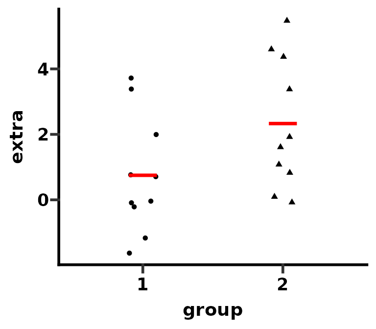
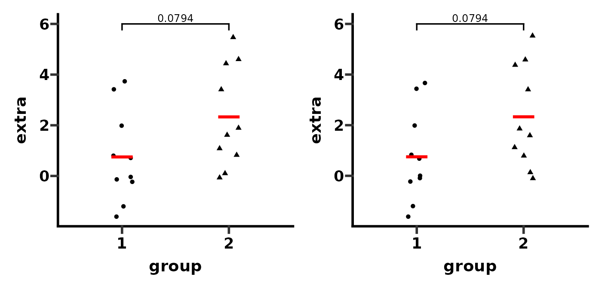
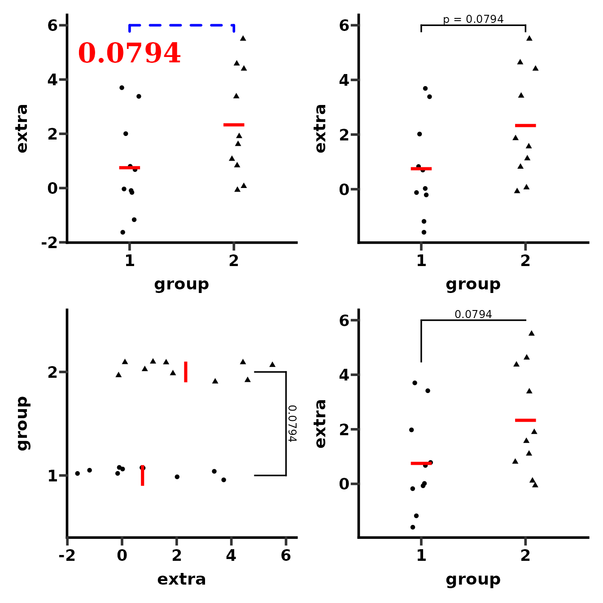
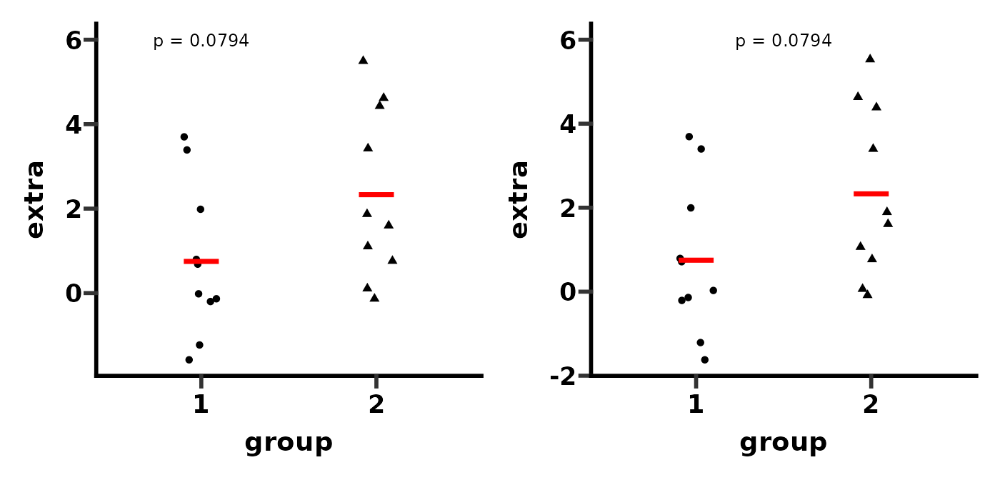
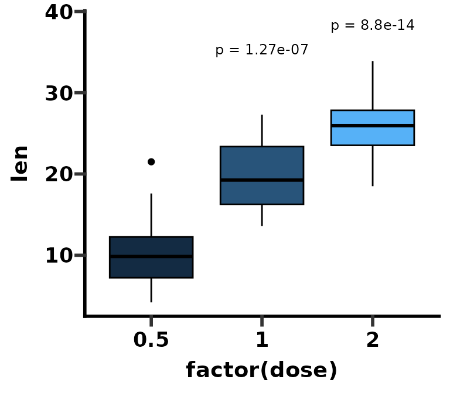
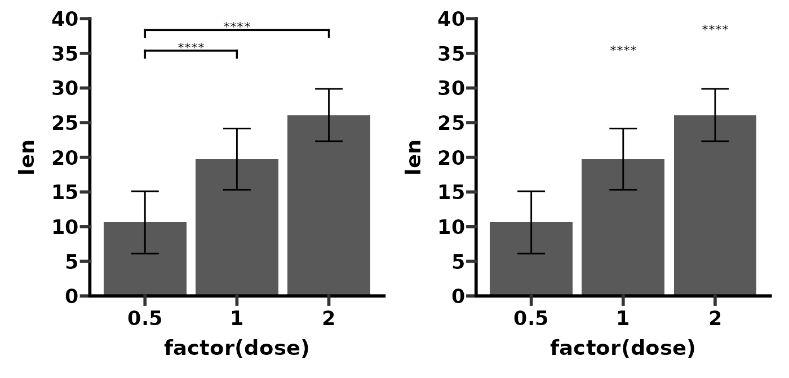
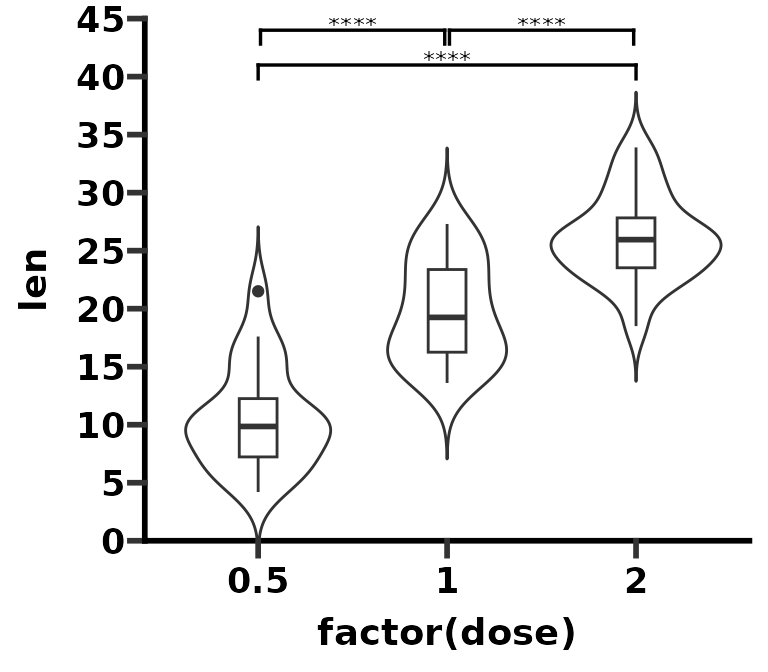
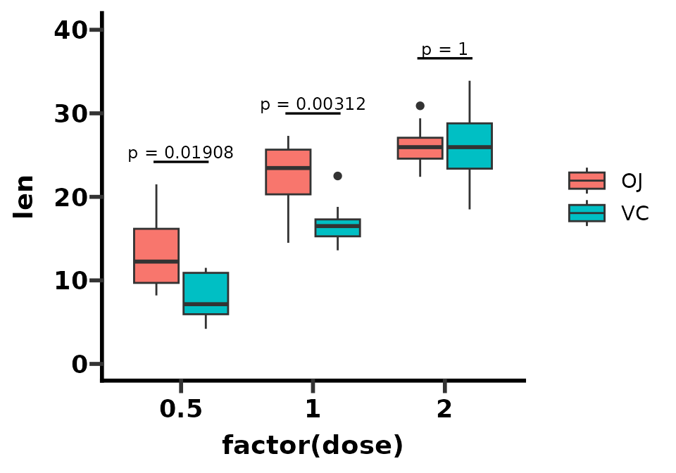
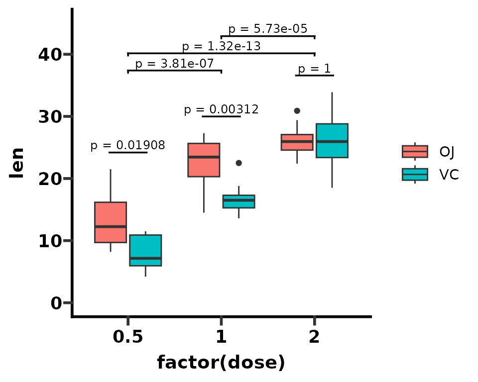
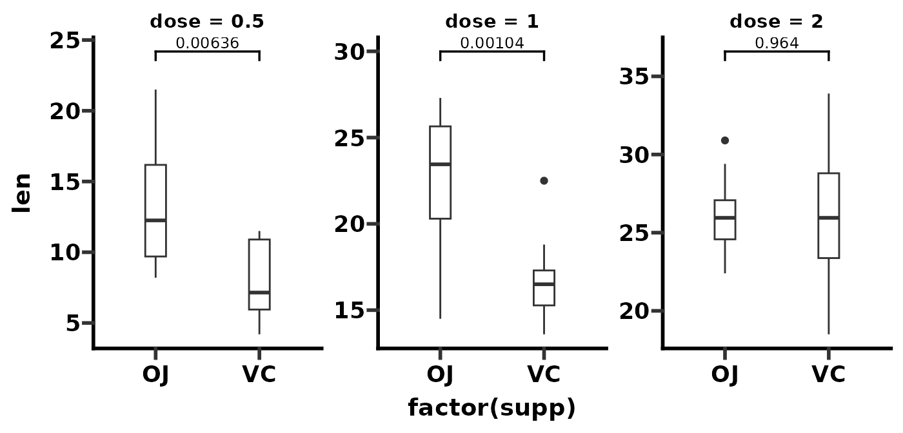

Arguably one of the most popular features of GraphPad Prism is adding p-values to plots. Indeed in Prism 9, GraphPad have added a feature to automatically perform pairwise comparisons and add the resulting p-values with brackets to the graph.
ggprism includes the add_pvalue() function to add p-values with or without brackets to ggplots. This vignette will go through the many ways in which this function can be used.
This function is a re-written version of stat_pvalue_manual() from the ggpubr package, which itself is based on the geom_signif() function from the ggsignif package. Compared to stat_pvalue_manual(), the add_pvalue() function is: easier to use, more robust with less dependencies, and has more customisable brackets.
Basic use (brackets)
To add significance brackets to a plot, you need a minimal data.frame with 4 columns and a number of rows corresponding to the number of brackets you want to add. The 4 columns should correspond to these 4 function arguments:
- xmin, the left hand position of the bracket (default column name is
"group1") - xmax, the right hand position of the bracket (default column name is
"group2") - label, the text to go on the brackets (default column name is
"label") - y.position, the vertical position of the bracket (default column name is
"y.position")
For grouped or faceted data you’ll also need a column which is named according to the grouping variable. See the Many more examples section for help with this/examples.
Let’s see how this works in practice. First we’ll plot the sleep data set.
str(sleep)
#> 'data.frame': 20 obs. of 3 variables:
#> $ extra: num 0.7 -1.6 -0.2 -1.2 -0.1 3.4 3.7 0.8 0 2 ...
#> $ group: Factor w/ 2 levels "1","2": 1 1 1 1 1 1 1 1 1 1 ...
#> $ ID : Factor w/ 10 levels "1","2","3","4",..: 1 2 3 4 5 6 7 8 9 10 ...
# create a jitter plot of the sleep data set
# and indicate the means
p <- ggplot(sleep, aes(x = group, y = extra)) +
geom_jitter(aes(shape = group), width = 0.1) +
stat_summary(geom = "crossbar", fun = mean, colour = "red", width = 0.2) +
theme_prism() +
theme(legend.position = "none")
p
Next we’ll perform a t-test and obtain a p-value for the difference between the two means.
# perform a t-test and obtain the p-value
result <- t.test(extra ~ group, data = sleep)$p.value
result <- signif(result, digits = 3)
result
#> [1] 0.0794Now we’ll construct a p-value data.frame for add_pvalue() to use.
df_p_val <- data.frame(
group1 = "1",
group2 = "2",
label = result,
y.position = 6
)And finally we’ll add this p-value to our plot. Because we have used the default column names (see above) in our p-value table we don’t necessarily have to specify any arguments of add_pvalue(). However, here we’ll do it for clarity’s sake. Additionally, if your p-value table has special column names, you will need to specify them in add_pvalue().
# add p-value brackets
p1 <- p + add_pvalue(df_p_val,
xmin = "group1",
xmax = "group2",
label = "label",
y.position = "y.position")
# change column names to something silly
colnames(df_p_val) <- c("apple", "banana", "some_label", "some_y_position")
# add p-value brackets again
p2 <- p + add_pvalue(df_p_val,
xmin = "apple",
xmax = "banana",
label = "some_label",
y.position = "some_y_position")
p1 + p2
# return column names back to default
colnames(df_p_val) <- c("group1", "group2", "label", "y.position")You can easily change how the bracket and label looks. You can make the label a glue expression. You can also change the tip length of the bracket. Lastly, you can flip the label when using coord_flip().
# change bracket and label aesthetics
p1 <- p + add_pvalue(df_p_val,
colour = "red", # label
label.size = 8, # label
fontface = "bold", # label
fontfamily = "serif", # label
angle = 45, # label
hjust = 1, # label
vjust = 2, # label
bracket.colour = "blue", # bracket
bracket.size = 1, # bracket
linetype = "dashed", # bracket
lineend = "round") # bracket
# use glue expression for label
p2 <- p + add_pvalue(df_p_val, label = "p = {label}")
# make bracket tips longer and use coord_flip
p3 <- p + add_pvalue(df_p_val, tip.length = 0.15, coord.flip = TRUE) +
coord_flip()
# change bracket tips independently
# (make one side disappear and the other longer)
p4 <- p + add_pvalue(df_p_val, tip.length = c(0.2, 0))
(p1 + p2) / (p3 + p4)
Basic use (no brackets)
Even if you don’t want brackets, add_pvalue() is also useful for adding significance text to plots with the correct/automatic positioning.
In the example above, if you wanted the text but not the bracket, you can just use the remove.bracket argument. In this case, you must use the x argument to change the x position of the text.
# position label above "group1"
p1 <- p + add_pvalue(df_p_val, label = "p = {label}",
remove.bracket = TRUE, x = 1)
# position label between x = 1 and x = 2
p2 <- p + add_pvalue(df_p_val, label = "p = {label}",
remove.bracket = TRUE, x = 1.5)
p1 + p2
Here is another example of ‘text only’ plot using the ToothGrowth data set.
str(ToothGrowth)
#> 'data.frame': 60 obs. of 3 variables:
#> $ len : num 4.2 11.5 7.3 5.8 6.4 10 11.2 11.2 5.2 7 ...
#> $ supp: Factor w/ 2 levels "OJ","VC": 2 2 2 2 2 2 2 2 2 2 ...
#> $ dose: num 0.5 0.5 0.5 0.5 0.5 0.5 0.5 0.5 0.5 0.5 ...
# create a box plot of the ToothGrowth data set
p <- ggplot(ToothGrowth, aes(x = factor(dose), y = len)) +
geom_boxplot(aes(fill = dose), colour = "black") +
theme_prism() +
theme(legend.position = "none")
pNext we’ll perform two t-tests and compare the means against dose = 0.5 as a reference group. Then we’ll correct the p-values for multiple testing.
# compare means again reference
result1 <- t.test(len ~ dose,
data = subset(ToothGrowth, dose %in% c(0.5, 1.0)))$p.value
result2 <- t.test(len ~ dose,
data = subset(ToothGrowth, dose %in% c(0.5, 2.0)))$p.value
# Benjamini-Hochberg correction for multiple testing
result <- p.adjust(c(result1, result2), method = "BH")We can now construct a p-value table. Note that in this case we don’t need to to specify a "group2" column for xmax. This is because text-only p-value annotations just have an x position (x) and not an x range (xmin and xmax).
# don't need group2 column (i.e. xmax)
# instead just specify x position in the same way as y.position
df_p_val <- data.frame(
group1 = c(0.5, 0.5),
x = c(2, 3),
label = signif(result, digits = 3),
y.position = c(35, 35)
)Then we add the p-values to the plot. As before, you can change how the labels look quite easily.
p1 <- p + add_pvalue(df_p_val,
xmin = "group1",
x = "x",
label = "label",
y.position = "y.position")
p2 <- p + add_pvalue(df_p_val,
xmin = "group1",
x = "x",
label = "p = {label}",
y.position = "y.position",
label.size = 3.2,
fontface = "bold")
p1 + p2
Using the rstatix package
As add_pvalue() is ultimately just a rewritten version of stat_pvalue_manual(), it works well with the rstatix package.
With rstatix, you can perform the statistical test and create the p-value table with the appropriate x and y position automatically, in a single step.
df_p_val <- rstatix::t_test(ToothGrowth, len ~ dose, ref.group = "0.5") %>%
rstatix::add_xy_position()
p + add_pvalue(df_p_val,
label = "p = {p.adj}",
remove.bracket = TRUE)
Many more examples
Here we will use add_pvalue() and rstatix to show many more examples of how to add p-values to different plots.
Compare two means
Compare mean len depending on supp. Error bars indicate 1 standard deviation from the mean.
df_p_val <- rstatix::t_test(ToothGrowth, len ~ supp) %>%
rstatix::add_x_position()
p <- ggplot(ToothGrowth, aes(x = factor(supp), y = len)) +
stat_summary(geom = "col", fun = mean) +
stat_summary(geom = "errorbar",
fun = mean,
fun.min = function(x) mean(x) - sd(x),
fun.max = function(x) mean(x) + sd(x),
width = 0.3) +
theme_prism() +
coord_cartesian(ylim = c(0, 35)) +
scale_y_continuous(breaks = seq(0, 35, 5), expand = c(0, 0))
# normal plot
p + add_pvalue(df_p_val, y.position = 30)
Compare mean vs reference
Compare mean len of each dose to dose = 0.5. Error bars indicate 1 standard deviation from the mean.
df_p_val <- rstatix::t_test(ToothGrowth, len ~ dose, ref.group = "0.5") %>%
rstatix::add_xy_position()
p <- ggplot(ToothGrowth, aes(x = factor(dose), y = len)) +
stat_summary(geom = "col", fun = mean) +
stat_summary(geom = "errorbar",
fun = mean,
fun.min = function(x) mean(x) - sd(x),
fun.max = function(x) mean(x) + sd(x),
width = 0.3) +
theme_prism() +
coord_cartesian(ylim = c(0, 40)) +
scale_y_continuous(breaks = seq(0, 40, 5), expand = c(0, 0))
# with brackets
p1 <- p + add_pvalue(df_p_val, label = "p.adj.signif")
# without brackets
p2 <- p + add_pvalue(df_p_val, label = "p.adj.signif", remove.bracket = TRUE)
p1 + p2Now, compare overall mean len (base mean) to the mean len for each dose. Error bars indicate 1 standard deviation from the mean.
df_p_val <- rstatix::t_test(ToothGrowth, len ~ dose, ref.group = "all") %>%
rstatix::add_xy_position()
p <- ggplot(ToothGrowth, aes(x = factor(dose), y = len)) +
stat_summary(geom = "col", fun = mean) +
stat_summary(geom = "errorbar",
fun = mean,
fun.min = function(x) mean(x) - sd(x),
fun.max = function(x) mean(x) + sd(x),
width = 0.3) +
theme_prism() +
coord_cartesian(ylim = c(0, 40)) +
scale_y_continuous(breaks = seq(0, 40, 5), expand = c(0, 0))
p + add_pvalue(df_p_val, label = "p.adj.signif")
Now, compare the mean len for each dose to some arbitrary value, say 26 in this case. Error bars indicate 1 standard deviation from the mean.
df_p_val <- ToothGrowth %>%
rstatix::group_by(factor(dose)) %>%
rstatix::t_test(len ~ 1, mu = 26) %>%
rstatix::adjust_pvalue(p.col = "p", method = "holm") %>%
rstatix::add_significance(p.col = "p.adj") %>%
rstatix::add_xy_position()
p <- ggplot(ToothGrowth, aes(x = factor(dose), y = len)) +
stat_summary(geom = "col", fun = mean) +
stat_summary(geom = "errorbar",
fun = mean,
fun.min = function(x) mean(x) - sd(x),
fun.max = function(x) mean(x) + sd(x),
width = 0.3) +
theme_prism() +
coord_cartesian(ylim = c(0, 40)) +
scale_y_continuous(breaks = seq(0, 40, 5), expand = c(0, 0))
# remember xmin and x are referring to the column dames in df_p_val
p + add_pvalue(df_p_val,
xmin = "group1",
x = "factor(dose)",
label = "p.adj.signif")Multiple pairwise comparisons
Compare mean len across the 3 different dose. Use the bracket.shorten argument to slightly shorten side-by-side brackets.
df_p_val <- rstatix::t_test(ToothGrowth, len ~ dose)
p <- ggplot(ToothGrowth, aes(x = factor(dose), y = len)) +
geom_violin(trim = FALSE) +
geom_boxplot(width = 0.2) +
theme_prism() +
coord_cartesian(ylim = c(0, 45)) +
scale_y_continuous(breaks = seq(0, 45, 5), expand = c(0, 0))
p + add_pvalue(df_p_val,
y.position = c(44, 41, 44),
bracket.shorten = c(0.025, 0, 0.025))Grouped pairwise comparisons
Pairwise comparisons between groups of the ToothGrowth data set, grouped according to supp. The boxplots and the brackets are automatically coloured according to supp. Three important points for this graph:
- The p-value data.frame must have a column named with the grouping variable (in this case named
supp) and the column must contain the groups to group by (in this case"OJ" or "VC". - Any grouping of data must be done in the individual Geom functions (in this case
geom_boxplot()) and not in theggplot()function. - You can use the
step.group.by = "supp"to automatically change the bracket spacing between different groups.
df_p_val <- ToothGrowth %>%
rstatix::group_by(supp) %>%
rstatix::t_test(len ~ dose) %>%
rstatix::add_xy_position()
p <- ggplot(ToothGrowth, aes(x = factor(dose), y = len)) +
geom_boxplot(aes(fill = supp)) +
theme_prism()
# remember colour and step.group.by are referring to a column name in df_p_val
p + add_pvalue(df_p_val,
label = "p = {p.adj}",
colour = "supp",
fontface = "bold",
step.group.by = "supp",
step.increase = 0.1,
tip.length = 0,
bracket.colour = "black",
show.legend = FALSE)
Pairwise comparisons within groups of the ToothGrowth data set, grouped according to supp.
df_p_val <- ToothGrowth %>%
rstatix::group_by(dose) %>%
rstatix::t_test(len ~ supp) %>%
rstatix::adjust_pvalue(p.col = "p", method = "bonferroni") %>%
rstatix::add_significance(p.col = "p.adj") %>%
rstatix::add_xy_position(x = "dose", dodge = 0.8) # important for positioning!
p <- ggplot(ToothGrowth, aes(x = factor(dose), y = len)) +
geom_boxplot(aes(fill = supp)) +
theme_prism() +
coord_cartesian(ylim = c(0, 40))
p + add_pvalue(df_p_val,
xmin = "xmin",
xmax = "xmax",
label = "p = {p.adj}",
tip.length = 0)Pairwise comparisons within groups and between groups of the ToothGrowth data set, grouped according to supp. You can use bracket.nudge.y to slightly adjust the overall y position of the brackets instead of having to redefine df_p_val2.
df_p_val1 <- ToothGrowth %>%
rstatix::group_by(dose) %>%
rstatix::t_test(len ~ supp) %>%
rstatix::adjust_pvalue(p.col = "p", method = "bonferroni") %>%
rstatix::add_significance(p.col = "p.adj") %>%
rstatix::add_xy_position(x = "dose", dodge = 0.8) # important for positioning!
df_p_val2 <- rstatix::t_test(ToothGrowth, len ~ dose,
p.adjust.method = "bonferroni") %>%
rstatix::add_xy_position()
p <- ggplot(ToothGrowth, aes(x = factor(dose), y = len)) +
geom_boxplot(aes(fill = supp)) +
theme_prism() +
coord_cartesian(ylim = c(0, 45))
p + add_pvalue(df_p_val1,
xmin = "xmin",
xmax = "xmax",
label = "p = {p.adj}",
tip.length = 0) +
add_pvalue(df_p_val2,
label = "p = {p.adj}",
tip.length = 0.01,
bracket.nudge.y = 2,
step.increase = 0.015)
Facets
Facet according to dose and then compare mean len between either supp. It is important that the p-value table must have a column with the same name as the faceting variable (in this case "dose").
df_p_val <- ToothGrowth %>%
rstatix::group_by(dose) %>%
rstatix::t_test(len ~ supp) %>%
rstatix::add_xy_position()
p <- ggplot(ToothGrowth, aes(x = factor(supp), y = len)) +
geom_boxplot(width = 0.2) +
facet_wrap(
~ dose, scales = "free",
labeller = labeller(dose = function(x) paste("dose =", x))
) +
theme_prism()
p + add_pvalue(df_p_val)
Facet according to supp and then compare mean len between the three dose. It is important that the p-value table must have a column with the same name as the faceting variable (in this case "supp").
df_p_val <- ToothGrowth %>%
rstatix::group_by(supp) %>%
rstatix::t_test(len ~ dose) %>%
rstatix::add_xy_position()
p <- ggplot(ToothGrowth, aes(x = factor(dose), y = len)) +
geom_boxplot(width = 0.4) +
facet_wrap(~ supp, scales = "free") +
theme_prism()
p + add_pvalue(df_p_val)
Facet according to some particular grouping variable called grp and dose, and then compare mean len between either supp. It is important that the p-value table must have columns with the same names as the two faceting variables (in this case "grp" and "dose").
# add a grouping variable to ToothGrowth
tg <- ToothGrowth
tg$grp <- factor(rep(c("grp1", "grp2"), 30))
# construct the p-value table by hand
df_p_val <- data.frame(
group1 = c("OJ", "OJ"),
group2 = c("VC", "VC"),
p.adj = c(0.0449, 0.00265),
y.position = c(22, 27),
grp = c("grp1", "grp2"),
dose = c("0.5", "1")
)
p <- ggplot(ToothGrowth, aes(x = factor(supp), y = len)) +
geom_boxplot(width = 0.4) +
facet_wrap(grp ~ dose, scales = "free") +
theme_prism()
p + add_pvalue(df_p_val, bracket.nudge.y = 3)